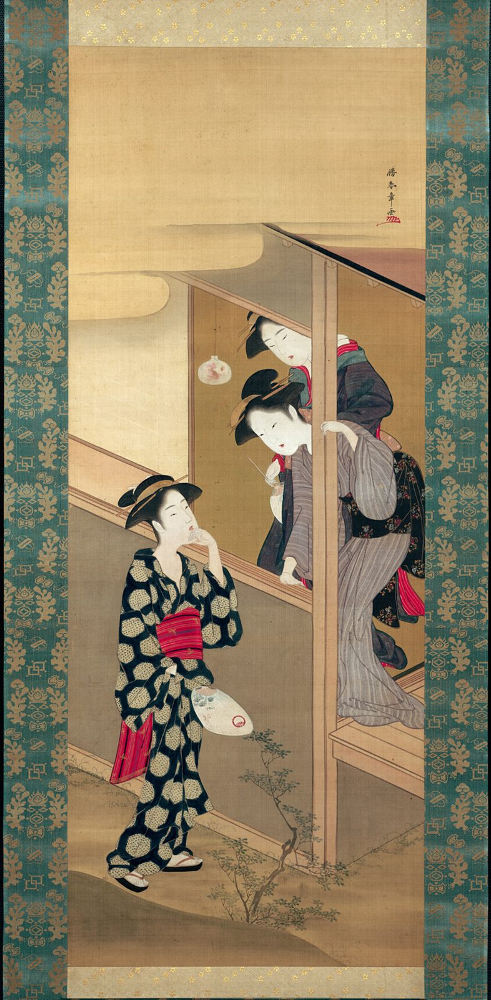

References / Painting / 536
Shunshō, Three Beauties Chatting by a Veranda
A hanging-scroll painting of three women at a veranda on a summer evening, by Katsukawa Shunshō, a print designer who also painted ukiyo-e on silk.
- Source
- Art Institute of Chicago, 1960.65
- Creator
- Katsukawa Shunshō
- Made
- About 1792
- Style
- Ukiyo-e (agent-proposed, not yet reviewed by a person)
- Moods
- Calm, elegant, narrative
- Evidence
- Downloaded and inspected the Art Institute of Chicago image of 1960.65 (843 × 1715 px, the largest size the IIIF server returned for this narrow scroll). The image includes the brocade mounting.
- Reviewed
- Rights
- Open license, stored. License: CC0-1.0. Rights policy
Context
AIC catalogues the work as a hanging scroll, ink and colors on silk, 89.4 × 34.6 cm, about 1792. AIC 1960.65.
Wikipedia’s Ukiyo-e article says that ukiyo-e artists produced paintings as well as prints, and names hanging scrolls (kakemono) among the most common painted formats. Wikipedia.
Observed
- The painting sits in a tall, narrow mount of green and gold brocade with a gold-flecked band above and below.
- A post of the veranda divides the picture vertically to the right of center. Two women lean out at right, a third stands on the ground at lower left.
- Figures have thin black outlines. Faces are flat white with no modelling.
- The standing woman’s robe is black with large cream hexagons. Her sash and under-robe are bright red. The other robes have fine gray stripes and small flower patterns.
- Bands of gold mist with soft edges cross the upper third and fade into the silk.
- A short vertical signature with a red seal sits high at the right.
Why it belongs
The scroll shows that the style is a pictorial language, not only a print technique: the painter keeps the print’s outlines and flat pattern.
The mist bands do in paint what bokashi does in print.
Borrow
Divide a tall layout with one vertical line placed off center, and let figures overlap it.
Use soft-edged horizontal bands to separate the top of a tall panel from the content.
Measured
Machine-extracted by tools/image-traits.py on . Full measurement.
- Mean chroma
- 0.21
- Palette
- #dbbc85 14%
- #a58152 12%
- #8e7a5e 10%
- #cdac79 9%
- #46655b 4%
- #856d51 4%
- #d0bf98 4%
- #37574f 4%



is_public_domain: true) and releases images of public-domain works under CC0. AIC open access. Shunshō died in 1793, so the painting is public domain in Japan and the United States. The brocade mounting is an old textile with no known author. License: CC0-1.0. Open the image for full size.